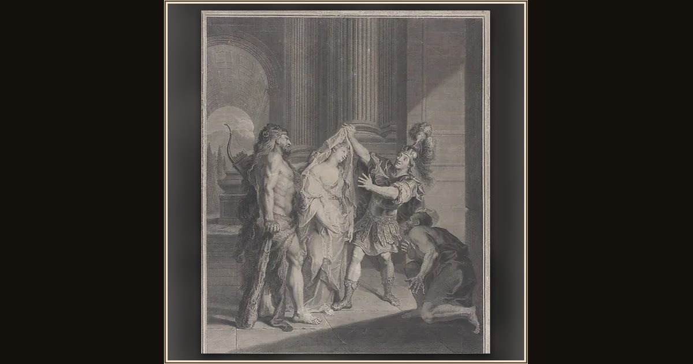

Hercules bringing Alcestis back to her husband Admetus
Louis Desplaces; after Antoine Coypel · 1715 · met
A veiled Alcestis stands between Heracles and Admetus as her veil is lifted; here Admetus takes her hand and Heracles tells him to keep her safe. (1119c) Explore its place in Euripides's Plays, Alcestis, line 1130.